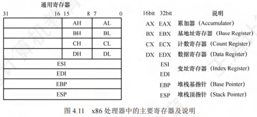
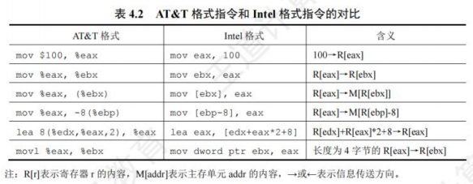
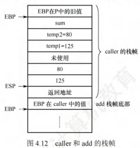

程序的机器级代码表
[toc]
常用汇编指令介绍
相关寄存器
x86处理器中有8个32位的通用寄存器。为了向后兼容，EAX、EBX、ECX和EDX的高两位字节和低两位字节可以独立使用，E表示Extended，表示32位的寄存器。例如，EAX的低两位字节称为AX，而AX的高低字节又可分别作为两个8位寄存器，分别称为AH和AL。

除EBP和ESP外，其他几个寄存器的用法比较灵活。
汇编指令格式
使用不同的编程工具开发程序时，用到的汇编程序也不同，一般有两种不同的汇编格式：AT&T格式和Intel格式（统考要求掌握的是Intel格式）。它们的区别主要体现如下：
- 字母大小写：AT&T格式的指令只能用小写字母，而Intel格式的指令对大小写不敏感。
- 操作数顺序：在AT&T格式中，第一个为源操作数，第二个为目的操作数，方向从左到右；在Intel格式中，第一个为目的操作数，第二个为源操作数，方向从右向左。
- 前缀使用：在AT&T格式中，寄存器需要加前缀“%”，立即数需要加前缀“$”；在Intel格式中，寄存器和立即数都不需要加前缀。
- 内存寻址符号：在内存寻址方面，AT&T格式使用“(”和“)”，而Intel格式使用“[”和“]”。
- 复杂寻址方式：在处理复杂寻址方式时，例如AT&T格式的内存操作数
disp(base,index,scale)分别表示偏移量、基址寄存器、变址寄存器和比例因子，如8(%edx,%eax,2)表示操作数为，其对应的Intel格式的操作数为[edx+eax*2+8]。 - 指定数据长度：在指定数据长度方面，AT&T格式指令操作码的后面紧跟一个字符，表明操作数大小，“b”表示byte(字节)、“w”表示word(字)或“l”表示long(双字)。Intel格式也有类似的语法，它在操作码后面显式地注明byte ptr、word ptr或dword ptr。
由于32或64位体系结构都是由16位扩展而来的，因此用Word(字)表示16位。表4.2展示了两种格式的几条不同指令。其中，mov指令用于在内存和寄存器之间或者寄存器之间移动数据；lea指令用于将一个内存地址(而不是其所指的内容)加载到目的寄存器。

两种汇编格式的相互转换并不复杂，但历年统考真题采用的均是Intel格式。
常用指令
汇编指令通常可分为数据传送指令、算术和逻辑运算指令和控制流指令，下面以Intel格式为例，介绍一些常用的指令。以下用于操作数的标记分别表示寄存器、内存和常数：
<reg>：表示任意寄存器，若其后带有数字，则指定其位数，如<reg32>表示32位寄存器（eax, ebx, ecx, edx, esi, edi, esp，ebp）；<reg16>表示16位寄存器（ax, bx, cx，dx）；<reg8>表示8位寄存器（ah, al, bh, bl, ch, cl, dh, dl）。<mem>：表示内存地址（如[eax]、[var + 4]或dword ptr [eax + ebx]）。<con>：表示8位、16位或32位常数。<con8>表示8位常数；<con16>表示16位常数；<con32>表示32位常数。
x86中的指令机器码长度为1字节，对同一指令的不同用途有多种编码方式，比如mov指令就有28种机内编码，用于不同操作数类型或用于特定寄存器，例如：
1 | |
数据传送指令
- mov指令：将第二个操作数（寄存器的内容、内存中的内容或常数值）复制到第一个操作数（寄存器或内存）。
- 语法：
1 | |
- 举例：
1 | |
- 注意：双操作数指令的两个操作数不能都是内存，即mov指令不能用于直接从内存复制到内存，若需在内存之间复制，可先从内存复制到一个寄存器，再从这个寄存器复制到内存。
- push指令：将操作数压入内存的栈，常用于函数调用。ESP是栈顶，入栈前先将ESP值减4（栈增长方向与内存地址增长方向相反），然后将操作数压入ESP指示的地址。
- 语法：
1 | |
- 举例（注意，栈中元素固定为32位）：
1 | |
- pop指令：与push指令相反，pop指令执行的是出栈工作，出栈前先将ESP指示的地址中的内容出栈，然后将ESP值加4。
- 语法：
1 | |
算术和逻辑运算指令
add/sub指令：add指令将两个操作数相加，相加的结果保存到第一个操作数中。sub指令用于两个操作数相减，相减的结果保存到第一个操作数中。- 语法：
1 | |
- 举例：
1 | |
inc/dec指令：inc、dec指令分别表示将操作数自加1、自减1。- 语法：
1 | |
- 举例：
1 | |
imul指令：有符号整数乘法指令，有两种格式：- 两个操作数，两个操作数相乘，将结果保存在第一个操作数中，第一个操作数必须为寄存器。
- 三个操作数，将第二个和第三个操作数相乘，将结果保存在第一个操作数中，第一个操作数必须为寄存器。
- 语法：
1 | |
- 举例：
1 | |
- 注意：乘法操作结果可能溢出，则编译器置溢出标志OF = 1，以使CPU调出溢出异常处理程序。
idiv指令：有符号整数除法指令，它只有一个操作数，即除数，而被除数则为edx:eax中的内容（共64位），操作结果有两部分：商和余数，商送到eax，余数则送到edx。- 语法：
1 | |
- 举例：
1 | |
and/or/xor指令：and、or、xor指令分别是逻辑与、逻辑或、逻辑异或操作指令，用于操作数的位操作，操作结果放在第一个操作数中。- 语法：
1 | |
- 举例：
1 | |
not指令：位翻转指令，将操作数中的每一位翻转，即0 -> 1、1 -> 0。- 语法：
1 | |
- 举例：
1 | |
neg指令：取负指令。- 语法：
1 | |
- 举例：
1 | |
shl/shr指令：逻辑移位指令，shl为逻辑左移，shr为逻辑右移，第一个操作数表示被操作数，第二个操作数指示移位的位数。- 语法：
1 | |
- 举例：
1 | |
控制流指令
x86处理器维持着一个指示当前执行指令的指令指针（IP），当一条指令执行后，此指针自动指向下一条指令。IP寄存器不能直接操作，但可以用控制流指令更新。通常用标签（label）指示程序中的指令地址，在x86汇编代码中，可在任何指令前加入标签。例如：
1 | |
这样就用begin指示了第二条指令，控制流指令通过标签就可以实现程序指令的跳转。
jmp指令：jmp指令控制IP转移到label所指示的地址（从label中取出指令执行）。- 语法：
1 | |
- 举例：
1 | |
jcondition指令：条件转移指令，依据CPU状态字中的一系列条件状态转移。CPU状态字中包括指示最后一个算术运算结果是否为0，运算结果是否为负数等。- 语法：
1 | |
- 举例：
1 | |
cmp/test指令：cmp指令的功能相当于sub指令，用于比较两个操作数的值。test指令的功能相当于and指令，对两个操作数进行逐位与运算。与sub和and指令不同的是，这两类指令都不保存操作结果，仅根据运算结果设置CPU状态字中的条件码。- 语法：
1 | |
- 举例：
1 | |
- call/ret指令：分别用于实现子程序（过程、函数等）的调用及返回。
- 语法：
1 | |
- call指令首先将当前执行指令地址入栈，然后无条件转移到由标签指示的指令。与其他简单的跳转指令不同，call指令保存调用之前的地址信息（当call指令结束后，返回调用之前的地址）。
- ret指令实现子程序的返回机制，ret指令弹出栈中保存的指令地址，然后无条件转移到保存的指令地址执行。call和ret是程序（函数）调用中最关键的两条指令。
理解上述指令的语法和用途，可以更好地帮助读者解答相关题型。读者在上机调试C程序代码时，也可以尝试用编译器调试，以便更好地帮助理解机器指令的执行。
选择语句的机器级表示
常见的选择结构语句有if-then、if-then-else等。编译器通过条件码(标志位)设置指令和各类转移指令来实现程序中的选择结构语句。条件码描述了最近的算术或逻辑运算操作的属性，可以检测这些寄存器来执行条件分支指令，最常用的条件码有**CF、ZF、SF和OF**。
常见的算术逻辑运算指令（add , sub , imul , or , and , shl , inc , dec , nosal 等）会设置条件码，还有**cmp和test指令只设置条件码而不改变任何其他寄存器**。
之前介绍的jcondition条件转跳指令，就是根据条件码**ZF和SF**来实现转跳的。
if-else语句的通用形式如下：
1 | |
这里的testexpr是一个整数表达式，它的取值为0(假)，或为非0(真)。两个分支语句（then statement或else statement）中只会执行一个。
这种通用形式可以被翻译成如下所示的goto语句形式：
1 | |
对于下面的C语言函数：
1 | |
已知p1和p2对应的实参已被压入调用函数的栈帧，它们对应的存储地址上分别为R[ebp]+8、R[ebp]+12（EBP指向当前栈帧底部），返回结果存放在EAX中。对应的的汇编代码为：
1 | |
p1和p2是指针型参数，所以在32位机中的长度是dword ptr，比较指令cmp的两个操作数都应来自寄存器，因此应先将p1和p2对应的实参从栈中取到通用寄存器，比较指令执行后得到各个条件码，然后根据各条件码值的组合选择执行不同的指令，因此需要用到条件转移指令。
循环语句的机器级表示
常见的循环结构语句有while、for和do-while。汇编中没有相应的指令存在，可以用条件测试和转跳组合起来实现循环的效果，大多数编译器将这三种循环结构都转换为**do-while形式来产生机器代码。在循环结构中，通常使用条件转移指令**来判断循环条件的结束。
do-while循环
do-while语句的通用形式如下：
1 | |
这种通用形式可以被翻译成如下所示的条件和goto语句：
1 | |
也就是说，每次循环，程序会执行循环体内的语句，body_statement至少会执行一次，然后执行测试表达式。若测试为真，则继续执行循环。
while循环
while语句的通用形式如下：
1 | |
与do-while的不同之处在于，第一次执行body_statement之前，就会测试test_expr的值，循环有可能中止。GCC通常会将其翻译成条件分支加do-while循环的方式。
用如下模板来表达这种方法，将通用的while循环格式翻译成do-while循环：
1 | |
相应地，进一步将它翻译成goto语句：
1 | |
for循环
for 循环的通用形式如下：
1 | |
这个for循环的行为与下面这段while循环代码的行为一样：
1 | |
进一步把它翻译成goto语句：
1 | |
下面是一个用for循环写的自然数求和的函数：
1 | |
这段代码中的for循环的不同组成部分如下：
i = 1：init expri <= n：test_expri++：update_exprresult += i：body statement
通过替换前面给出的模板中的相应位置，很容易将for循环转换为while或do-while循环。
将这个函数翻译为goto语句代码后，不难得出其过程体的汇编代码：
1 | |
已知n对应的实参已被压入调用函数的栈帧，其对应的存储地址为R[ebp]+8，过程nsum_for中的局部变量i和result被分别分配到寄存器EDX和EAX中，返回参数在EAX中。
过程调用的机器级表示
前面提到的call/ret指令主要用于过程调用，它们都属于一种无条件转移指令。
假定过程P(调用者)调用过程Q(被调用者)，过程调用的执行步骤如下：
- P将入口参数(实参)放到Q能访问到的地方。
- P将返回地址存到特定的地方，然后将控制转移到Q。
- Q保存P的现场(通用寄存器的内容)，并为自己的非静态局部变量分配空间。
- 执行过程Q。
- Q恢复P的现场，将返回结果放到P能访问到的地方，并释放局部变量所占空间。
- Q取出返回地址，将控制转移到P。
步骤2由call指令实现，步骤6通过ret指令返回到过程P。在上述步骤中，需要为入口参数、返回地址、过程P的现场、过程Q的局部变量、返回结果找到存放空间。
用户可见寄存器数量有限，调用者和被调用者需共享寄存器，若直接覆盖对方的寄存器，会导致程序出错。因此有如下规范：
- 寄存器EAX、ECX和EDX是调用者保存寄存器，当P调用Q时，若Q需用到这些寄存器，则由P将这些寄存器的内容保存到栈中，并在返回后由P恢复它们的值。
- 寄存器EBX、ESI、EDI是被调用者保存寄存器，当P调用Q时，Q必须先将这些寄存器的内容保存在栈中才能使用它们，并在返回P之前先恢复它们的值。
每个过程都有自己的栈区，称为栈帧，因此，一个栈由若干栈帧组成。寄存器EBP指示栈帧的起始位置，寄存器ESP指示栈顶，栈从高地址向低地址增长。过程执行时，ESP会随着数据的入栈而动态变化，而EBP固定不变。当前栈帧的范围在EBP和ESP指向的区域之间。
下面用一个简单的C语言程序来说明过程调用的机器级实现。
1 | |
经GCC编译后，caller过程对应的代码如下（#后面的文字是注释）：
1 | |
图4.12给出了caller栈帧的状态，假定caller被过程P调用。执行第4行的指令后，ESP所指的位置如图中所示，可以看出GCC为caller的参数分配了24字节的空间。从汇编代码中可以看出：
- caller中只使用了调用者保存寄存器EAX，没有使用任何被调用者保存寄存器，因此在caller栈帧中无须保存除EBP外的任何寄存器的值。
- caller有三个局部变量temp1、temp2和sum，皆被分配在栈帧中。
- 在用call指令调用add函数之前，caller先将入口参数从右向左依次将temp2和temp1的值(即80和125)保存到栈中。在执行call指令时再把返回地址压入栈中。此外，在最初进入caller时，还将EBP的值压入了栈，因此caller的栈帧中用到的空间占4 + 12 + 8 + 4 = 28字节。但是，caller的栈帧共有4 + 24 + 4 = 32字节，其中浪费了4字节的空间(未使用)。这是因为GCC为保证数据的严格对齐而规定每个函数的栈帧大小必须是16字节的倍数。
call指令执行后，add函数的返回参数存放在EAX中，因此call指令后面的两条指令中：
- 指令
mov [ebp - 4], eax将add的结果存入sum变量的存储空间，该变量的地址为R[ebp] - 4。 - 指令
mov eax, dword ptr [ebp - 4]将sum变量的值作为返回值送到寄存器EAX中。

在执行ret指令之前，应将当前栈帧释放，并恢复旧EBP的值，上述第14行leave指令实现了这个功能，leave指令功能相当于以下两条指令的功能：
1 | |
其中，第一条指令使ESP指向当前EBP的位置，第二条指令执行后，EBP恢复为P中的旧值，并使ESP指向返回地址。
执行完leave指令后，ret指令就可从ESP所指处取返回地址，以返回P执行。当然，编译器也可通过pop指令和对ESP的内容做加法来进行退栈操作，而不一定要使用leave指令。
add过程经GCC编译并进行链接后，对应的代码如下所示：
1 | |
通常，一个过程对应的机器级代码都有三个部分：准备阶段、过程体和结束阶段。
- 上述第1、2行的指令构成准备阶段的代码段，这是最简单的准备阶段代码段，它通过将当前栈指针ESP传送到EBP来完成将EBP指向当前栈帧底部的任务，如图4.12所示，EBP指向add栈帧底部，从而可以方便地通过EBP获取入口参数。这里add的入口参数x和y对应的值(125和80)分别在地址为
R[ebp] + 8、R[ebp] + 12的存储单元中。 - 上述第3、4、5行的指令序列是过程体的代码段，过程体结束时将返回值放在EAX中。这里好像没有加法指令，实际上第5行lea指令执行的是加法运算
R[edx] + R[eax] = x + y。 - 上述第6、7行的指令序列是结束阶段的代码段，通过将EBP弹出栈帧来恢复EBP在caller过程中的值，并在栈中退出add过程的栈帧，使得执行到ret指令时栈顶中已经是返回地址。这里的返回地址应该是caller代码中第12行的指令
mov [ebp - 4], eax的地址。
add过程中没有用到任何被调用者保存寄存器，没有局部变量，此外，add是一个被调用过程，并且不再调用其他过程，因此也没有入口参数和返回地址上要保存，因此，在add的栈帧中除了需要保存EBP，无须保留其他任何信息。